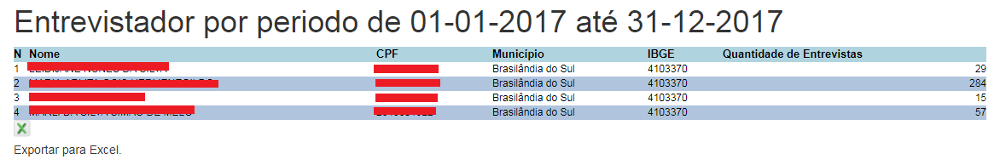
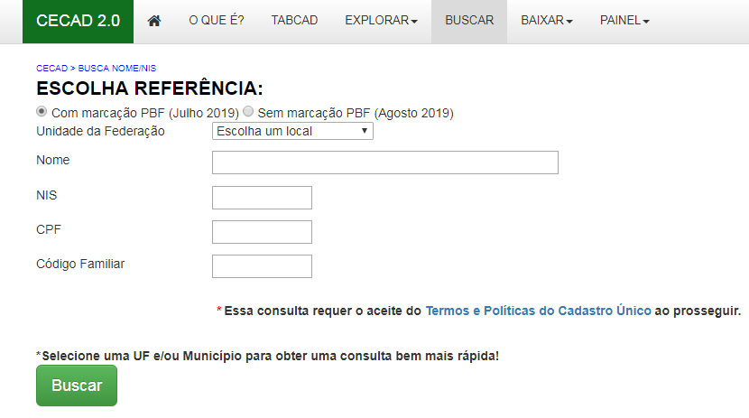
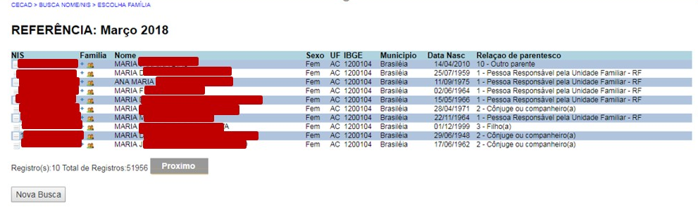
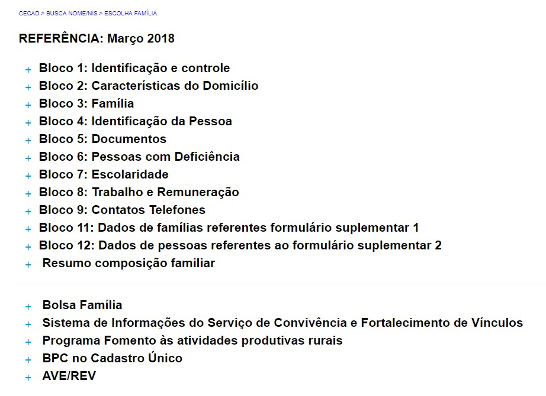

Entrevistador¶
Nessa funcionalidade, você será capaz de identificar quais foram os entrevistadores que realizaram os cadastros ou atualizaram os dados das famílias ao longo de determinado período. Assim, você será capaz de monitorar quem fez mais e menos cadastros.
Assim, essa ferramenta é bastante útil para acompanhar o trabalho dos entrevistadores e fazer gestão das informações dos trabalhadores no Sistema de Cadastro Único!
Assim, o sistema retorna uma lista de nomes que tenham correspondência com as informações digitadas:
Clicando no ícone “+” ao lado do nome selecionado o sistema apresenta outras informações detalhadas sobre a pessoa, permitindo ao usuário fazer a correta identificação e observação sobre dados da pessoa e família contidos em todos os Blocos do Formulário de Cadastramento, bem, como informações referentes a benefícios do Programa Bolsa família, Programa Fomento às atividades produtivas rurais; Benefício de Prestação Continuada (BPC no Cadastro Único); participação no Sistema de Informações do Serviço de Convivência e Fortalecimento de Vínculos e dados sobre o processo de Averiguação e Revisão Cadastral (AVE/REV).
Para ver as informações detalhadas sobre os blocos do formulário de cadastramento ou dos serviços e programas basta clicar nos ícones “+” ao lado de cada opção.